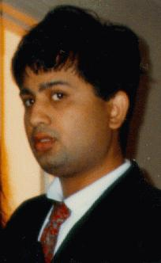

WEEKEND THOUGHTS # 21

Hi All,
Another weekend; time for another article. But this weekend is going to be different. And why not. DIFFERENT IS GOOD. Weekend Thought is proud to present Mr.Tarun Tripathy from Oregon. He's truly an artist by nature. You must have come across his magnificient artistic creations from time to time on this media. Get to know him better.
Hope it makes an enjoyable reading.
happy weekend
surjit (7/21/95)
Tarun Tripathy
Beaverton, OR
Email ID: tarunt@gypsy.sj.unisys.com
Parents:
Dr. K. C. Tripathy, HOD (Anth), Utkal University
Mrs. S. Devi, D. M. School
Married to:
Neeta Mishra, d/o Late Sridhar Mishra, IGP, Cuttack
Education:
1982 - D. M. School
1982-84 - +2, BJB College
1984-88 - B.E(Electrical & Electronics), REC, TN
Positions:
1988-92 - Worked in the Research and Development deptt of TVS
Electronics, Bangalore.
1992-93 - Worked for BNR on an offshore project in Wipro Systems.
1993- - Working for Sequent Computer Systems in their Base
Operating Systems group in the 'Fibre Channel
Subsystem' project.
Miscellaneous:
Vincent Bendix award for the best project in Region 10, 1987.
Represented India in Festival of India in Russia, 1987
Bachelor of Music (Tabla)
Publication of several papers on electronics projects.
Hobbies:
Composing music (can manage to play a dozen instruments:-),
literature, painting, sketching, singing, magic, etc.
Sorry about interrupting. But I am changing the flow a little bit here. I changed "Review" to a "Preview". because that's how I felt.
-surjit-
Providing a good review for a story, a poem, or an article, is a very difficult task, unless you are a professional. Its difficult because you have to place yourself in the mind of the author and think like him, to be able to realize his inspirations and his motivations which led him to write such a wonderful piece. Only when one is able to do so will he/she be able to give a good review. Hope I am successful in doing so.
The author here presents a very nice science fiction story. Its more like a page or a chapter out of an interesting science fiction novel. It makes you hope that the story had continued into the next chapter. In the beginning, I had problems understanding the story, (not being a very big sciene fiction fan), so I read the story a few times and finally when I got the gist of the story, I was looking forward to more of it. Its really a nice piece. I hope it would have been a little longer. Then we could post it as Part-I to Part-N like the reviews and flames from the OSA Convention :). After all the heat from the OSA discussion I hope everyone will find this story really interesting and enjoyable. I enjoyed it a lot. I wish it had continued on. Thanks for sharing it with us.
Regards,
Sidhartha Mohanty
Traveler
By: Tarun Tripathy
I watch her as she dances to an old classical tune on the quadreo. Why don't they make music like they used to ? Tull is so good. I can feel his flute fill the emptiness, but I can't feel any emotions. It's a handicap ! I voice-command to dim the lights and put on the laser hologram. Ian dances with his flute, singing a song from Catfish Rising. She is dancing the neo-glide, her breasts on the offbeat. It's a real tough dance but I don't believe in putting in so much energy into dancing.
Now we have the post-modern bebop and treggae, a variation of reggae of the 2000 AD. 'Post-modern' sounds like an oxymoron, doesn't it ? The treggae - it's just an improvisation on how you syncopate on the gyat. I like the old fashioned reggae ! So what if it's 65 years old ?
I like the science fiction movies of our times. They are so much the reality! I remember a couple of sci-fi from the 80's that I saw a few weeks back. They are so unreal. Not a single movie ever predicted what was to become of mankind. Nontheless, I always enjoy Speilberg stories from the movie crypt.
Early that evening, I had promised her that I would take her to Lonely Hearts. I cross over the din, "Hey, Nitiena, coming now ? You have had enough of that dancing. Have you recharged yet for the 4Q ?"
She looks at me smiling for a moment. Her lips part, and she says, "Oops, I don't know if I am charged strong, hon. Could you check my T-lobe indicator ?" Her level is goddamned low. I plug her in into the bio-charge. It takes 3 minutes and 40 seconds for a complete refill. For me, it takes 3 minutes and 20 seconds. I have always wondered why she takes up so much energy for a quarter !
The nuclear war of 2010 ! Before that, Earth was a green peaceful planet. People were so good ! In spite of the diseases, ozone layer depletion, unholy deforestation, earthquakes from volcanos which were branded extinct and so many other things. The decadence of nature ! Man kept taking giant leaps forward. Never stopping to think about the morbid ecological imbalance that one day would yo-yo on him. I remember how the neuro-chip changed the history of humankind. We could interface the human brain with a computer over a neural interface. The speed was incredible - 1000G/s. Was it how fast the human mind raced ? I always thought it was faster than light. Bio-chemical warfare, coupled with neural based computing technology gave birth to the most dreaded of all weapons - the N-blasters ! Now we all need a bio-charge every 6 hours! To survive, to see what is left of mankind. This cold concrete jungle with it's beasts. Us !
We get into our aero-G (an anti-gravity vehicle that cruises 1m above ground), power her up and key in the destination co-ordinates. I hold her hand, but there is not any love that flows. I have heard about love and stuff. Maybe, when I was a child I felt what love was. But my memory holds nothing of the past ! Now, they are simulating 'love feelings' on the latest Krypto-gen neural computers. You get interfaced with your T-lobe input over an advanced interface based on NCSI (Neural Computers System Interface). They have a psychosomatic simulation program called 'Street Romeo' that costs a whooping 700 G$ (global dollar) per session. Never tried it, though. Anyway, here we are - Lonely Hearts !
I love the taste of water. It's the costliest and the best. She has problems with water. Last time, her reservoir rejected it - so she goes in for ferric drinks. That's good for her - gives her a complexion boost. But I like water ! Pure water. I hate the acid rain. "One small water please," I pass a brand new G$ over the counter.
We saunter across the floor and sit down somewhere where the neon is low and gloomy. We watch the hologram for a while. There is a movie on the war - destruction, neurosomatic mutilations, etc. We look at each other and continue a debate that we have been having for a long time now.
"Are you sure that thing works, Niti ?" I whisper.
"Yeah, I bet it does. Prof. Ed says that Marina disappeared for her own good. Now, she's enjoying a real Elvis Presley concert and eating real burgers," she replies.
"But how does the neo-physiological setup adapt itself in the sixties ?" I enquire.
"Well, that's one amazing thing," she says. "The human anatomical parts try to adapt themselves in a pure ecological backstage, as God meant it to be. Soon, you would be able to dispose off your T-lobe holes and the support bio-equips. There are risks too. If the body does not adapt and you run out of energy in the implanted bio-charge cells that your body will carry..."
"You can't come back, right ? And you ... die. Well, you know you mentioned God. I have never believed in that term. It's kind of vague, kind of undefined. I think people could feel his presence before - but that was long back, when people were people, as nature meant them to be. Not with pathological shortcomings... like us. I can't even feel some of the things that literature describes. Do you think you want to do it, Niti ?"
"Yeah. I want to meet my grandmother at school."
It takes a month of logical reasoning. We try out our strategies on a Krypto-gen. All the trials lead us to one logical conclusion. Leave the present. Self-destruct before 2010. I would not be greedy and go all the way back to meet my grandmother. I would go to the 80s. It will give me 30 years of peace. There are risks involved ! But we decide to take them.
At Prof. Ed's, we fill out numerous forms and pledges. I do not know how the transport system works. I am not interested in knowing. It would only induce fear and reluctance. I ponder over the law of conservation of energy and time-space relationships. How will I show up in the 80s ? Will I be someone I was or will I be someone new ? The professor does not answer any of these queries. He only says, "You will be surprised. And remember, the only defect in this transport mechanism is that you will be accompanied with this light green colored bio-shield. It does not evaporate at your time-space destination. It melts into plasma. It's not water-soluble. So you may have to mop it up before it dries off." He grins.
I wish Niti goodbye before she slips into the giant transporter. Her time coordinates are already programmed in. I take a peek at the control console that Prof is working on. One of the blue displays has the time-space destination: Jan 1st, 1956. 20.01 N. 86.11 E.
* * *
The loud noise of TV takes me out of my deep REM phase. I wake up in a place that I don't recognize. There is a buzzing noise in my head. Things start to look familiar. I slowly recognize that picture in the frame. Is it me ? "Yes," I confirm.
My home ! I am home. But I have this terrible headache and I am sure I had a nightmare. I feel the back of my head - there is no T-lobe interface socket. There is just this tiny little bump. I guess I must have hit something hard. I switch off the VCR and eject the cassette. "Back to the Future" ! I smile to myself. "Time travel. Yeah, right !"
I get up and slowly crawl my way to the refrigerator. I have to have something. Yes, water ! My thirst is of a million years. My family has gathered around and are having dinner. My mother is surprised to see me. "Well, I thought you were spending the night at your friend's place. You guys had some assignment to do, right ?", she reiterates. "Which friend ?" I ask.
"Bubu," she replies.
"Never heard of him !"
I join my family at dinner and my mom rushes to my room to make sure the lights are off. "Hey son, what is this green goo on the floor ?", she hollers after a few minutes of inspection of the pig sty.
"I don't know !"
* * *
Your comments are always welcome...

 Tarun Tripathy
Tarun Tripathy

Ride back to Home Page...
![[IMAGE]](../../wt/rath.gif)